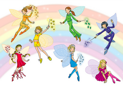
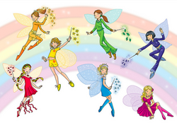

Tie-Dye Durning Spirit Week
Coding is a basic literacy in the digital age, and it is important for kids
to understand and be able to work with and understand the technology around them.
Having children learn coding at a young age prepares them for the future. Coding helps children with
communication, creativity, math,writing, and confidence.
In film, students learned the foundations needed to create their own stories
Tie-Dye Durning Spirit Week

Hooping with Angela
Kids news a live film that was created at lowel school at 1640 kalmia street N.W.
The cast was a of students from a class from coding and film making. The cast includes Riley,Siena,David,Theo,Meera. They have subjects such as Sports,Animals,Jokes and Riddles.
the kids news strong suit is editing because they can ad a speech bubble all the way to trouble shooting how to work the green-blue screen. Kids news describes the balance of athletics,academics,social life . i hiley suggest kids ages 7-10 watch kids news. down below you can watch the kids news trailer and bloopers and the full kids news and you can meet the cast.
Hi my name is Theo today I will be talking about climate change and globle warming.
Globle warming efects alot of animals in antartica especially polar bears.
Check this out!
The Rainbow Fairies have pets. Fluffy the squirl is one.
Queeny the Bee is another.
.png) 


It is the feast of all collers in Faryland.
Meet The Fairies